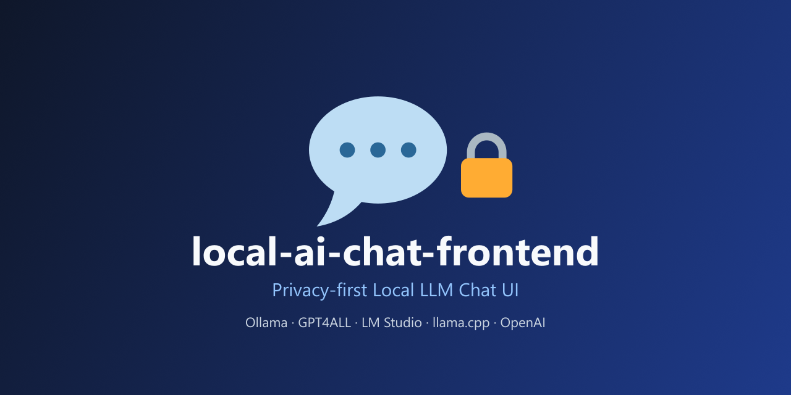

ローカルLLMを、
ブラウザひとつで。
Run local LLMs,
right in your browser.
本地LLM，
浏览器直接运行。
Ollama・GPT4ALL・LM Studio・llama.cpp・OpenAI に対応したプライバシー重視のチャットUI。バックエンドはお好きなローカルLLMプロバイダーを自由に選択でき、APIキーは端末のIndexedDBから外に出ません。 A privacy-first chat UI supporting Ollama, GPT4ALL, LM Studio, llama.cpp, and OpenAI. Choose your own local LLM provider as the backend — your API key never leaves your device's IndexedDB. 支持 Ollama、GPT4ALL、LM Studio、llama.cpp 和 OpenAI 的隐私优先聊天界面。后端由你自由选择本地 LLM 提供商，API 密钥仅保存在本地设备的 IndexedDB 中，绝不外泄。
npx github:hidao80/local-ai-chat-frontend
特徴Features功能特色
ローカルLLMを日常的に使うために必要な機能を、余計な仕組みなしで。 Everything you need for daily local-LLM use, nothing you don't. 日常使用本地 LLM 所需的一切功能，不多不少。
プライバシーファーストPrivacy First隐私优先
APIキーや設定はIndexedDBに保存され、端末の外へは送信されません。サーバーへのログ収集もありません。 API keys and settings are stored in IndexedDB and never sent off your device. No server-side logging. API 密钥和设置保存在 IndexedDB 中，绝不发送到设备之外。也没有服务器端日志收集。
マルチプロバイダー対応Multi-provider Support多提供商支持
OpenAI互換のエンドポイントなら何でも接続可能。モデル一覧はサーバーから自動取得します。 Connect to any OpenAI-compatible endpoint. The model list is fetched automatically from the server. 可连接任何兼容 OpenAI 的接口。模型列表会自动从服务器获取。
推論モデル対応Reasoning Model Support推理模型支持
o1・GPT-OSS・DeepSeek-R1などの推論モデルを自動検出し、reasoning_effortを調整できます。 Automatically detects reasoning models like o1, GPT-OSS, and DeepSeek-R1, letting you tune reasoning_effort. 自动检测 o1、GPT-OSS、DeepSeek-R1 等推理模型，并可调节 reasoning_effort。
チャット履歴管理Chat History聊天记录管理
すべての会話をIndexedDBに保存。サイドバーから過去のチャットを一覧・削除できます。 All conversations are saved in IndexedDB. Browse and delete past chats from the sidebar. 所有对话均保存在 IndexedDB 中。可在侧边栏浏览并删除历史聊天。
ダークモード / i18nDark Mode / i18n深色模式与多语言
日本語・英語のUIとダーク/ライトテーマに対応。設定は端末に保存され再訪問時も維持されます。 Japanese/English UI with dark and light themes. Preferences are saved and persist across visits. 支持日语/英语界面与深色/浅色主题。设置会保存在本地，再次访问时依然保留。
Docker / Podman対応Docker / Podman Support支持 Docker / Podman
本番用イメージはnginxで静的配信。開発用compose構成も同梱しています。 The production image serves static files via nginx. A dev compose setup is included too. 生产镜像通过 nginx 提供静态文件服务，并附带开发用 compose 配置。
対応プロバイダーSupported Providers支持的提供商
ローカル・クラウド問わず、OpenAI互換APIに幅広く対応。 Broad support for OpenAI-compatible APIs, local or cloud. 广泛支持本地或云端的 OpenAI 兼容 API。
| プロバイダーProvider提供商 | デフォルトエンドポイントDefault Endpoint默认端点 | 認証Auth认证 | 推論対応Reasoning推理支持 |
|---|---|---|---|
| OpenAI | https://api.openai.com | APIキー必須API key required需要 API 密钥 | あり（reasoning_effort） Yes (reasoning_effort) 支持（reasoning_effort） |
| Ollama | http://localhost:11434 | 不要Not required不需要 | あり（think） Yes (think) 支持（think） |
| GPT4ALL | http://localhost:4891 | 不要Not required不需要 | なしNo不支持 |
| LM Studio | http://localhost:1234 | 任意Optional可选 | あり（reasoning_effort） Yes (reasoning_effort) 支持（reasoning_effort） |
| llama.cpp | http://localhost:8080 | 不要Not required不需要 | あり（reasoning_effort） Yes (reasoning_effort) 支持（reasoning_effort） |
はじめるGet Started快速开始
インストール不要。コマンド一つでブラウザに起動します。 No installation needed. One command launches it in your browser. 无需安装，一条命令即可在浏览器中启动。
npx github:hidao80/local-ai-chat-frontend
docker build -t local-ai-chat-frontend .
docker run -p 80:80 local-ai-chat-frontend